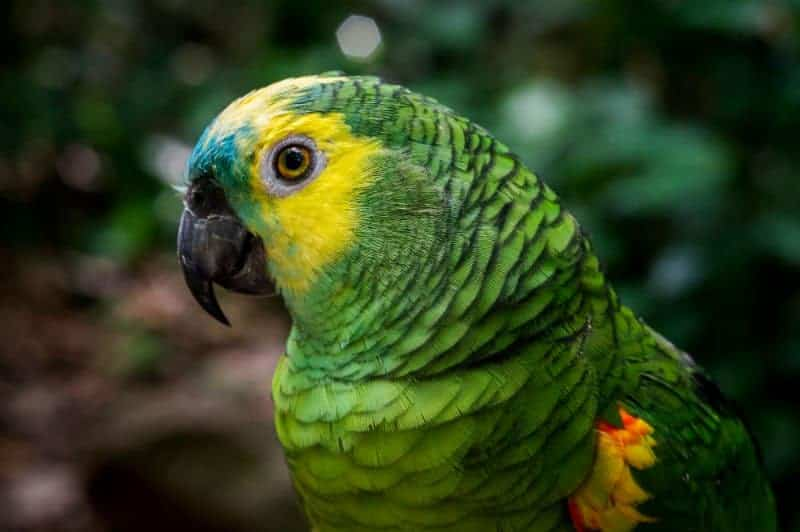

Vacinação para cães: quais vacinas são essenciais?
Publicado em 26 de abril de 2024
Tempo de leitura: 6min
A vacinação para cães é um dos cuidados mais importantes que o tutor deve proporcionar para os seus animais. Não só para manter os amiguinhos de quatro patas saudáveis, como também para garantir o bem-estar dos tutores, já que algumas doenças podem ser transmitidas entre os cachorros e as pessoas.
Contar com a ajuda de um profissional é muito importantes para garantir a imunização completa do animal. A seguir, você confere qual vacina para cachorro é obrigatória, para que cada uma serve e quanto devem ser aplicadas. Boa leitura!
Vacina polivalente: a primeira proteção do pet
Enquanto para os humanos, geralmente, dispõem de uma vacina para cada tipo de doença, com os pets, é diferente. No caso deles, existe a vacina polivalente, que previne mais de uma enfermidade.
Por isso, é comum ouvir os termos “V8” e “V10 para cachorro”, que indicam o número de doenças prevenidas pela injeção. A primeira etapa do calendário de vacinação para cães protege o animal contra 10 doenças diferentes, no caso da V10.
A administração é feita em três ou quatro doses, dependendo da raça e idade do pet. Assim, a imunização só fica completa após a última aplicação. Durante esse período, o animal não pode passear na rua, mas pode ir visitar amigos e familiares.
A primeira vacina do cachorro deve ser aplicada entre 6 e 8 semanas de vida dele. Após um intervalo de 21 a 30 dias, a segunda dose precisa ser administrada. Por fim, a terceira aplicação deve ocorrer quando o cachorro completar 16 semanas de vida ou mais.
Quais doenças são prevenidas pela V10?
Antes de qualquer coisa, não se esqueça de que a imunização só fica completa após a última dose. Então, evite que o cãozinho tenha contato com pets desconhecidos. Já com os conhecidos e vacinados, o contato pode ocorrer, desde que não seja na rua ou em parques.
Ela é uma vacina anual para cachorro. A dose anual deve ser dada a contar da data da última dose e serve para manter o seu amigo de quatro patas protegido. Veja quais são as doenças prevenidas pela V10:
Cinomose: essa infecção viral é muito contagiosa e altamente letal, sendo a doença infecciosa mais temida pelos veterinários e tutores, pois acomete o sistema nervoso central, causando paralisia, convulsões e diversas sequelas no cachorro que sobrevive à infecção;
Hepatite infecciosa canina: transmitida por meio do contato com fluidos do animal infectado, como fezes, urina e saliva. Afeta o fígado canino e pode levar a óbito;
Parvovirose canina: altamente contagiosa, é transmitida pelo contato direto e indireto com fezes e outras secreções. Causa diarreia, que pode levar a quadros graves de desidratação, sendo especialmente perigosa para filhotes;
Coronavirose: causa diarreia que coloca o pet em risco;
Adenovirose: transmitida por vírus, é responsável por doenças respiratórias, como bronquite, com evolução para pneumonias;
Parainfluenza canina: assim como a adenovirose, pode levar a problemas respiratórios com graves consequências e causar a traqueobronquite infecciosa canina;
Leptospirose: é a chamada doença do rato. Os principais sintomas são vômito, diarreia, hemorragia, icterícia e dificuldade de respirar. Ao todo, a vacina polivalente protege o pet contra 2 (V8) ou 4 (V10) tipos de leptospirose.
Vacina antirrábica: Proteção para todos
A raiva é uma das doenças que podem ser transmitidas de animais para humanos. É fatal para os animais e somente 5 pessoas no mundo todo tiveram cura, mas não sem sequelas. A vacina antirrábica é, portanto, uma das principais do calendário de imunização dos animais.
Quando os primeiros sinais surgem, não demora muito para a doença evoluir. Agressividade, alucinações e dificuldade em engolir são alguns sintomas. O óbito pode ocorrer em apenas uma semana.
Por meio de campanhas de vacinação para cães e gatos e conscientização sobre a raiva, a doença teve sua incidência diminuída no Brasil. Por isso, é tão importante continuar imunizando os pets. Dessa forma, é possível garantir que a contaminação seja rara.
Essa é a única vacina obrigatória para os cães e gatos no país. A imunização é feita com uma dose após a 12ª semana de vida do animal. Porém, para garantir a eficácia, é necessário vacinar o cachorro todo ano. Logo, é essencial ser responsável com o calendário de vacinação para cães.
Outras vacinas recomendadas
Além da vacina polivalente para cachorro e da antirrábica, outras são recomendadas para os peludos, como as que previnem a gripe canina, a Giardia sp e o verme do coração. Elas podem ser altamente recomendadas em alguns casos.
Cachorros que convivem muito com outros cães e costumam frequentar hotéis, por exemplo, devem receber a vacina contra a gripe e contra a Giardia sp. Afinal, são doenças altamente contagiosas e que debilitam muito o animal.
Já a vacina contra o verme do coração deve ser aplicada naqueles animais que residem ou frequentam o litoral e/ou regiões de mangue, pois a doença é transmitida por um mosquito que vive nesses locais.
Calendário de vacinação canina
É importante saber quando cada uma das vacinas deve ser administrada. O médico veterinário irá fazer a tabela de vacinas para cachorro de acordo com o risco ao qual o animal está sujeito, mas, em geral, o calendário para filhotes segue algumas datas:
Entre 6 e 8 semanas de vida: primeira dose da vacina polivalente V8 ou V10 com 2 ou 3 reforços, com intervalo entre 21 a 30 dias;
A partir de 12 semanas: aplicação da vacina antirrábica;
A partir de 16 semanas: administração das demais vacinas (gripe canina, contra Giardia sp e contra o verme do coração).
E quais vacinas o cachorro deve tomar? O protocolo será definido pelo médico veterinário, pois são muitas opções. E todas possuem reforços anuais a contar da data da última dose aplicada.
Lembre-se de que somente profissionais de confiança podem fazer a aplicação das vacinas para garantir a segurança e a eficácia da vacinação para cães. Para manter os cuidados da saúde do peludo, agende já sua vacinação nas lojas da Petz!
Petz
Aqui você encontra tudo sobre o mundo animal e fica por dentro dos cuidados essenciais com o seu pet.
Deixe um comentário
Mais no blog
Dicas
Plantas
Como plantar pitaya: dicas práticas e de sucesso!
Além de ser linkda por dentro e por fora, a fruta-do-dragão tem como diversos benefícios para [...]
21 de junho de 2024
Plantas
Aprenda como fazer muda de pleomele
Se você gosta de plantas ou deseja iniciar na jardinagem, venha aprender como fazer muda [...]
19 de junho de 2024

Aves
Papagaio pode comer girassol? Entenda tudo sobre o assunto
Os passáros têm uma dieta muito rica e diversificada. Eles comem frutas, verduras, legumes, sementes [...]